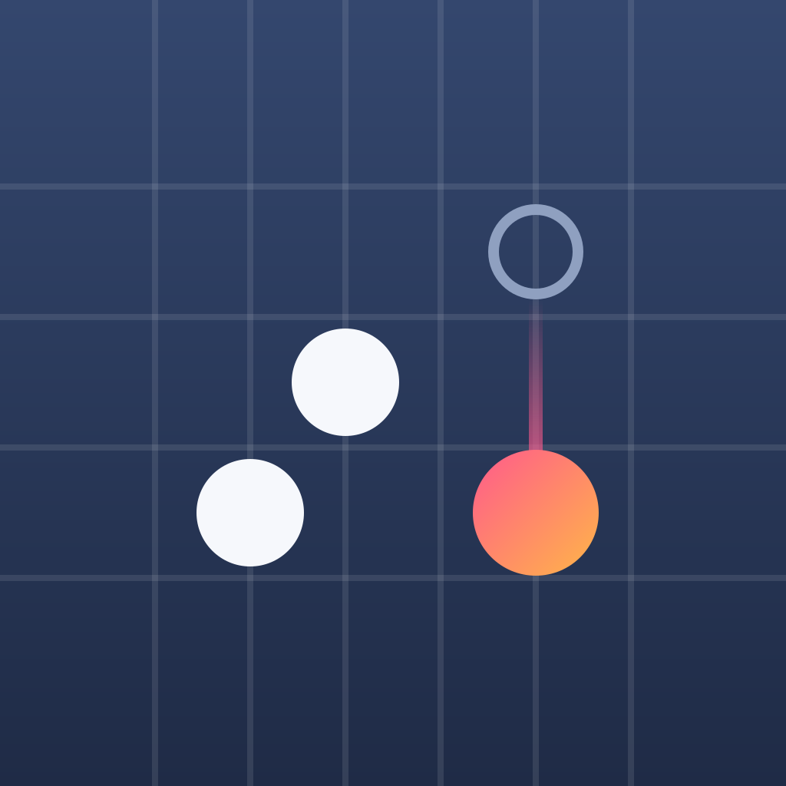

沿指板移动的和弦指型，与空弦的共鸣交织。
升高音高会增加琴弦张力并让泛音更清脆，使开放弦分解琶音呈现出标志性的钟鸣感。
包含。本页同时收录标准调弦、Open E 与升全音调弦的经典指法。
自由切换 12 个根音、0–12 品变调夹与和弦进行，在 iPhone 和 iPad 上无广告免费使用。
歌曲教学中的横按与开放七和弦，加上 Open D 持续音。
标准调弦的紧凑指型，与 FACGCE 调弦中持续共鸣的延伸音。
持续共鸣的高音、宽音程挂留和弦与稀疏的七和弦。
大小九和弦与变化属和弦。